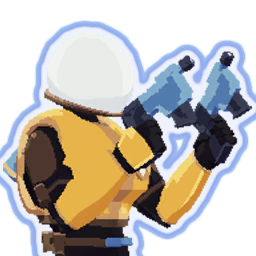
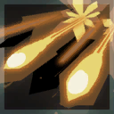
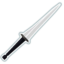
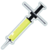
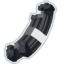
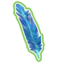
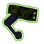
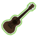
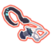

Il y a pas moins de 10 personnages jouables dans Risk of Rain 2 avec leurs propes attriburs. Chacun à ses caractérisques, ses compétences et donc un gameplay qui varie.
Le jeu débute avec un seul personnage disponible : Commando. Pour le reste, il faudra réaliser divers défis pour les débloquer.
| Commando | |
|---|---|
|  | |
| Le Commando est un personnage touche-à-tout qui est fiable dans toutes les situations du jeu | |
| Santé | 110 (+33 par niveau) |
| Régénération | 1/s (+0,2 par niveau) |
| Dommage | 12 (+2,4 par niveau) |
| Vitesse | 7 m/s |
| Armure | 0 |
| débloquer Commando | |
| Commando est le premier personnage / classe auquel vous avez accès dans le jeu. Au moment où vous commencez à jouer à Risk of Rain 2, vous aurez déjà le Commando déverrouillé. | |
|  |
Tapez deux fois |
| Tirez rapidement sur un ennemi pour 100% de dégât |
| Prend 0,4 s avec une vitesse d'attaque de 1. |
| La réduction des dégâts commence à 25 m et se termine à 60 m , tombant à environ 50% des dégâts de la balle. |
Meilleurs objets pour Commando
|  | 15% de chance de faire saigner un ennemi pour 240% des dégâts de base à chaque coup. | 5% de chance d’attacher une bombe infligeant 180% des dégâts totaux à chaque impact. | |
|  | Augmente la vitesse d’attaque de 15% |  | Ajoute 1 charge de compétence secondaire. |
|  | +1 saut maximum | Sauter en sprintant vous propulse 10m en avant | |
| Infliger des dégâts vous soigne de 1 PV | Gagne 5% de chance de coup critique. Les coups critiques soignent de 8 PV. |
||
|  | 10% de chance de tirer un missile qui inflige 300% dégâts totaux |  | 25% de chance de tirer une chaîne d’éclairs qui inflige 80% des dégâts totaux à jusqu’à 3 ennemis dans un rayon de 20m Les coups critiques soignent de 8 PV. |
|  | 20% de chance à chaque coup de lancer des crochets autoguidés à jusqu’à 10 ennemis pour 100% dégâts totaux |